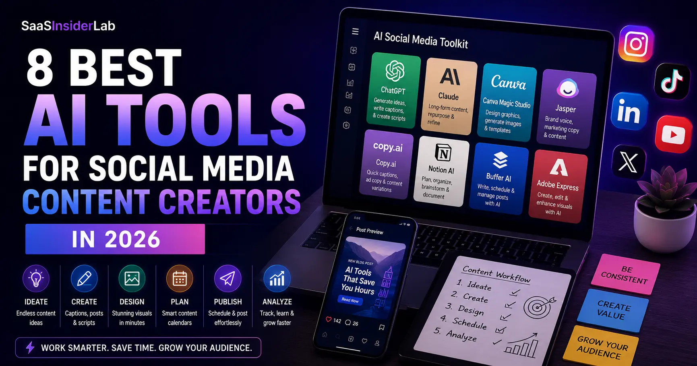

If you've been creating content for any social platform in the last year or two, you already know how relentless the pace has become. Algorithms reward consistency, audiences expect variety, and the window between trending and tired gets shorter every month. By 2026, the pressure to post more, post smarter, and post across multiple platforms simultaneously has pushed even experienced creators to the edge of burnout.
That's exactly why AI tools for social media content creators have gone from a niche experiment to a genuine workflow essential. It's not about replacing creativity. It's about having a system that helps you move faster without constantly staring at a blank screen wondering what to post next.
The three pain points that come up again and again are: running out of content ideas, spending too long writing captions that feel flat, and not having a reliable process to repurpose content across platforms. Add content planning on top of that, and it's easy to see why so many creators are looking for smarter solutions.
This guide covers the best AI social media tools available right now, how they actually perform in a real workflow, and which combinations make the most sense depending on your budget and goals.
What Makes a Good AI Tool for Social Media Content Creation?
Not every AI tool that claims to help with social media actually delivers. A lot of them look impressive in demos but fall apart when you try to use them consistently. Here are the things that actually matter when evaluating AI content creation tools.
Ease of use: If it takes you twenty minutes to figure out how to generate a caption, that tool is working against you. The best tools feel intuitive within the first session.
Content quality: AI can generate output quickly, but quick and good are not always the same thing. You want a tool that gives you something close to usable on the first pass, not a rough draft that needs a complete rewrite.
Workflow efficiency: A good AI tool should slot into what you're already doing, not force you to build an entirely new system around it.
Platform support: Whether you're creating for Instagram, LinkedIn, YouTube, or X, the tool should understand platform-specific norms and formats.
Value for money: Most serious AI tools require a monthly subscription. The question is whether the time you save justifies what you spend.
Collaboration features: For teams or agencies managing multiple accounts, the ability to share workspaces, leave notes, and maintain brand consistency across contributors matters a lot.
Best AI Tools for Social Media Content Creators in 2026
1. ChatGPT — Best All-Around Writing and Ideation Tool
ChatGPT from OpenAI remains one of the most versatile AI tools for content creators, and in 2026, it's only gotten more capable. It handles a wide range of content tasks in a single interface, which makes it practical for solo creators and small teams alike.
For caption writing, it can match the tone of your existing content if you give it a few examples upfront. For content ideation, it's genuinely useful for breaking creative blocks — you can ask for 20 post ideas around a topic and narrow them down from there. It also handles content repurposing well. Paste in a blog post or a YouTube transcript and ask it to extract five Instagram carousels, a LinkedIn post, and three tweet threads. It won't be perfect, but it gives you a real starting point.
Content calendar creation is another strong use case. You can describe your niche, your posting frequency, and your audience, and ask ChatGPT to outline a 30-day content plan with content pillars and post themes. It's also fast for hashtag generation and writing short-form scripts for Reels or TikToks.
| Strengths | Flexible, fast, handles multiple content formats, great for brainstorming and drafting |
| Weaknesses | Without context, outputs can feel generic. Requires good prompting to get consistently useful results. No native social scheduling |
| Pricing | Free tier available. ChatGPT Plus at $20/month unlocks GPT-4o and advanced features |
| Best for | Content creators who need an all-in-one writing and ideation assistant and don't mind spending a few minutes learning how to prompt well |
2. Claude — Best for Brand Voice and Long-Form Repurposing
Claude, built by Anthropic, has earned a reputation for producing text that feels more natural and less robotic than many competitors. For social media content creators who care about maintaining a consistent brand voice, this matters more than you might expect.
Where Claude really shines is in long-form content repurposing. Give it a detailed blog post, a podcast transcript, or a long LinkedIn article, and ask it to turn that into a week's worth of social content. It does an unusually good job of preserving the original tone while adapting the format for each platform.
For content planning, Claude is strong at helping you think through content strategy rather than just generating output. You can have a back-and-forth conversation where it helps you identify gaps in your current content, suggest angles you haven't covered, and even critique your existing captions. It's also genuinely useful for content rewriting — when you have a post that isn't landing the way you want, Claude can give you three or four rewritten versions with different tones or angles.
| Strengths | Nuanced writing, strong brand voice retention, excellent at long-form repurposing, thoughtful responses |
| Weaknesses | No native image generation. Not designed for scheduling or direct platform publishing |
| Pricing | Free tier available. Claude Pro at $20/month for expanded usage and access to the most capable models |
| Best for | Creators who produce a lot of written content and need help repurposing it across platforms without losing their voice |
3. Canva Magic Studio — Best for Visual Content Creation
Most creators think of Canva as a design tool, but Magic Studio has turned it into something much closer to an AI content creation platform for visual output. If your content strategy relies heavily on graphics, carousels, or branded visuals for Instagram, Pinterest, or LinkedIn, this is one of the most practical tools in the stack.
Magic Studio includes AI image generation directly inside the design workflow, which means you can generate a custom background, drop it into a template, and have a finished graphic without ever leaving the app. The design automation features are genuinely useful for creators managing multiple formats — you can take one design and auto-resize it for Instagram Stories, a square feed post, a LinkedIn banner, and a Pinterest pin in seconds. If you want a deeper look at tools built specifically for visual creation, check out our guide to AI image generators for non-designers, where we compare popular options for creating custom graphics without professional design skills.
For teams or freelancers managing client accounts, Canva's brand kit and collaboration features are solid. Everyone stays on-brand, and shared folders keep assets organized across projects.
| Strengths | Intuitive design interface, strong AI image generation, excellent template library, easy resizing across formats |
| Weaknesses | AI writing tools inside Canva are basic. Not a replacement for a dedicated writing AI. Some advanced features require Canva Pro |
| Pricing | Free tier available. Canva Pro at $15/month per user |
| Best for | Creators who need polished visual content quickly, especially those working across multiple platforms with different format requirements |
4. Jasper — Best for Marketing Teams and Brand Consistency
Jasper is positioned squarely at marketing professionals and teams, and it shows. The platform has robust brand voice settings that let you define tone, style, and terminology at the account level, which is useful for agencies or businesses managing content across multiple campaigns.
For social media content specifically, Jasper has dedicated templates for caption writing, ad copy, and content ideation. The quality is generally solid, though you'll still need to edit for specificity and personality. Where Jasper stands out is in workflow — it integrates with tools like Surfer SEO for blog content and has a Chrome extension that lets you use AI writing assistance inside other platforms.
| Strengths | Strong brand voice controls, good template library, useful for teams managing multiple campaigns |
| Weaknesses | More expensive than many alternatives. Can feel overly template-driven for creative content |
| Pricing | Starts at $49/month. Team plans vary |
| Best for | Marketing teams, agencies, and businesses that need consistent brand voice across large volumes of content |
5. Copy.ai — Best for Quick Drafts and Campaign Variety
Copy.ai is fast and easy to use, which makes it a strong option for creators who need quick first drafts across many content types. It has a library of templates covering everything from Instagram captions to email subject lines to product descriptions, and the interface is beginner-friendly.
The quality is decent for short-form content, but like most AI writing tools, it tends toward the generic side unless you invest time in refining your prompts. Copy.ai works best as a starting point rather than a finished output tool.
| Strengths | Fast, easy to learn, good template variety, affordable entry-level plan |
| Weaknesses | Outputs often need significant editing. Less nuanced than Claude or ChatGPT for complex content tasks |
| Pricing | Free tier available. Starter plan at $36/month |
| Best for | Beginners who want an easy entry point into AI content creation tools without a steep learning curve |
6. Notion AI — Best for Content Planning and Organization
Notion AI is a different kind of tool on this list. It's not primarily a content generator — it's an AI layer built into a workspace and note-taking app. For content creators who already use Notion for planning, the AI features make it significantly more powerful.
You can use Notion AI to generate content calendars, summarize research notes, draft outlines for video scripts or articles, and brainstorm post ideas inside the same workspace where you organize everything else. The integration with your existing documents and databases is what makes it genuinely useful.
| Strengths | Seamless integration with planning workflows, great for content organization, useful for teams |
| Weaknesses | Not a standalone social media content tool. AI writing features are supplementary, not primary |
| Pricing | Notion AI is an add-on at $10/month per user on top of a Notion plan |
| Best for | Creators and teams who already use Notion and want to add AI-assisted planning and drafting without switching platforms |
7. Buffer AI Assistant — Best for Scheduling with Built-in AI
Buffer has long been one of the most reliable scheduling tools for social media managers, and the AI Assistant it added is genuinely useful rather than just a checkbox feature. It helps you write captions, suggest variations, and repurpose content ideas directly inside the scheduling workflow.
The main advantage here is the all-in-one nature of the tool. You don't need to generate content in one place and then copy it into a scheduler. The AI is right there when you need it, and you can go from idea to scheduled post in a few minutes.
| Strengths | Integrated AI writing inside a scheduling platform, clean interface, good platform support |
| Weaknesses | AI writing capabilities are more limited than dedicated writing tools. Not ideal as your primary content generation tool |
| Pricing | Free tier available. Essentials plan at $6/month per channel |
| Best for | Solopreneurs and small business owners who want AI-assisted writing built into their scheduling workflow |
8. Adobe Express AI — Best for High-Quality Visual Content
Adobe Express AI sits in a similar space to Canva Magic Studio but brings Adobe's creative depth to the table. For creators who need professional-grade visuals and are already in the Adobe ecosystem, it's a natural fit. The AI features include text-to-image generation, background removal, and smart design suggestions that draw on Adobe Firefly.
The output quality for images and graphics is excellent, particularly for brands that need high-resolution, commercial-grade visuals. The tradeoff is that the learning curve is slightly steeper than Canva, and the pricing reflects Adobe's premium positioning.
| Strengths | High-quality image generation, professional design output, strong brand asset management |
| Weaknesses | More expensive than Canva. Learning curve for new users. Overkill for simple content needs |
| Pricing | Free tier available. Premium starts at $9.99/month, often bundled with Creative Cloud |
| Best for | Professional creators, photographers, and brands that need premium visual quality and are already using Adobe tools |
AI Tools Comparison
Here's a practical summary of how these tools stack up across the dimensions that matter most for social media content creation.
Ease of use: Canva Magic Studio and Copy.ai are the easiest to get started with. ChatGPT and Claude require a bit more prompting skill but reward the investment. Jasper and Adobe Express have steeper learning curves.
Content quality: Claude and ChatGPT lead for written content. Canva Magic Studio and Adobe Express lead for visuals. Jasper is strong for structured marketing copy.
Creativity: ChatGPT and Claude are the most flexible for creative ideation. Buffer's AI assistant is more structured and less exploratory.
Visual content support: Canva Magic Studio and Adobe Express are the clear leaders. The writing tools have little to no visual capability.
Social media workflow support: Buffer wins here because scheduling is its core function. Notion AI is best for planning. The writing tools focus on content generation, not distribution.
Pricing: Buffer and Copy.ai offer the most accessible entry points. Jasper is the most expensive option in this group.
Beginner friendliness: Canva, Copy.ai, and Buffer are the most beginner-friendly. Claude and ChatGPT have low barriers but benefit from prompt practice.
| Tool | Category | Free Plan? | Starting Price | Overall Value |
|---|---|---|---|---|
| ChatGPT | Writing & Ideation | Yes | $20/mo (Plus) | Best value for writers |
| Claude | Writing & Repurposing | Yes | $20/mo (Pro) | Best value for writers |
| Canva Magic Studio | Visual Content | Yes | $15/mo (Pro) | Best value for visuals |
| Jasper | Marketing Copy | No | $49/mo | Best for teams |
| Copy.ai | Quick Drafts | Yes | $36/mo (Starter) | Good for beginners |
| Notion AI | Planning | No | $10/mo (add-on) | Best for organization |
| Buffer AI Assistant | Scheduling | Yes | $6/mo (Essentials) | Best for scheduling + AI |
| Adobe Express AI | Visual Content | Yes | $9.99/mo | Best for premium visuals |
Real-World Use Cases
The right tool depends a lot on what platform you're creating for and what your workflow looks like.
Instagram creators: The combination of ChatGPT or Claude for captions and Canva Magic Studio for graphics covers most needs. ChatGPT is particularly good for hook writing and caption variations.
LinkedIn creators: Claude performs well for the longer, more thoughtful posts that tend to do well on LinkedIn. Its ability to maintain a consistent professional tone across a content series is a genuine advantage.
YouTube creators: ChatGPT handles script drafts and video description writing effectively. Notion AI works well for organizing research and episode planning.
Freelancers: A combination of ChatGPT for content generation and Buffer for scheduling keeps the workflow lean.
Solopreneurs: Buffer AI Assistant is often enough for straightforward scheduling needs. Pair it with Claude or ChatGPT for content generation.
Small business owners: Canva Magic Studio for branded graphics and ChatGPT for captions and email content covers the basics without a complex toolstack.
Social media managers: Jasper's team features and brand voice controls make it a practical choice for agency work. Combine with Canva for visual delivery.
How AI Fits Into a Modern Content Workflow
The most effective way to use AI tools isn't to hand everything over and hit publish. It's to use them at specific points in your process where they remove friction without removing your voice.
A realistic AI-assisted workflow looks something like this: Start with research and idea generation using ChatGPT or Claude to surface angles on a topic you already care about. From there, generate a rough content outline and identify which formats suit each idea — a long LinkedIn post, an Instagram carousel, a short Reel script.
Once you have an outline, use AI to draft captions or scripts. This is where the time savings are most significant. Instead of staring at a blank text box, you're editing and refining. Then move to visuals — Canva Magic Studio or Adobe Express to build the graphics that go with the text.
Schedule everything in Buffer or your preferred scheduling tool, then circle back at the end of the month to look at what performed and ask AI to help you identify patterns or repurpose your top-performing content into new formats.
Honest Limitations of AI Social Media Tools
There's a lot of enthusiasm around AI tools for content creation, and a lot of it is deserved. But it's worth being clear-eyed about what these tools don't do well.
Generic output is the most common frustration. Without strong prompting and context-setting, AI tends to produce content that sounds like it could belong to anyone. That's the opposite of what good social media content needs to be.
Every output needs editing. This is not a workflow where you generate and post. You generate, review, refine, and then post. Creators who skip the editing step usually end up with content that feels flat or off-brand.
Brand voice is hard to replicate at scale. You can get close with good examples and clear instructions, but there's always a gap between AI-generated content and the content you'd write yourself on your best day.
Accuracy is a real concern. AI tools can produce confident-sounding information that's simply wrong. For any content that involves facts, statistics, or specific claims, you need to verify before publishing.
Creative limitations also exist. AI is excellent at recombining and rephrasing existing patterns. It's much weaker at genuine originality. The best creative ideas still come from you; AI helps you execute them faster.
Finally, subscription costs add up. If you're running three or four AI tools simultaneously, you could easily be spending $80 to $150 per month. Make sure the time you're saving is worth more than what you're paying.
Which AI Tool Should Beginners Start With?
If you're new to AI tools for social media marketing and want a practical starting point, the answer depends on what your biggest bottleneck is.
Who Should Use ChatGPT?
If writing is your main challenge and you want flexibility across content types, start with ChatGPT. The free tier is genuinely useful, and the learning curve is manageable. It handles captions, content ideas, calendar planning, hashtag research, and script writing from one interface. It's also the most widely documented AI tool, which means there are thousands of tutorials and prompt guides available to help you learn faster.
Who Should Use Canva Magic Studio?
If visual content is your priority and you're creating for image-heavy platforms like Instagram or Pinterest, Canva Magic Studio is the right starting point. It's the most beginner-friendly design tool available, and the AI features make it possible to produce professional-looking content without any design background. The free tier covers most basic needs.
Who Should Use Claude?
If you already produce a significant amount of written content and your challenge is maintaining quality and brand voice while scaling output, Claude is worth trying. It's particularly well-suited to creators who publish longer posts, run newsletters alongside their social media, or need to repurpose detailed content across multiple formats. The free tier gives you a solid sense of whether it fits your workflow before committing to a subscription.
Best AI Tool Combination for Content Creators
Budget creator setup: ChatGPT (free tier) + Canva Magic Studio (free tier). This combination covers ideation, caption writing, and visual content creation without spending anything. Upgrade only when you hit the limits.
Freelancer setup: ChatGPT Plus ($20/month) + Canva Pro ($15/month) + Buffer Essentials. Solid coverage for writing, visuals, and scheduling across client accounts.
Small business setup: Claude Pro ($20/month) for brand-consistent writing + Canva Pro for visuals + Buffer for scheduling. Clean and manageable.
Professional creator setup: ChatGPT Plus + Claude Pro + Adobe Express Premium + Notion AI. This gives you maximum flexibility across writing, visuals, and planning, and is worth the investment if content is your primary business.
Final Thoughts
The best AI social media tools don't do the work for you — they remove the friction that stops you from doing your best work consistently. Whether that's the blank-page paralysis of caption writing, the grind of repurposing the same content for five different platforms, or the time cost of building a content calendar from scratch, the tools in this guide address real problems.
If you're starting out, pick one tool that matches your biggest bottleneck and spend two weeks actually using it. ChatGPT is the most versatile place to begin for most creators. Canva Magic Studio is the right first step if visuals are your priority. Build from there as your needs evolve.
Frequently Asked Questions
There's no single answer because it depends on your content type and workflow. For writing and ideation, ChatGPT and Claude are the strongest options. For visual content, Canva Magic Studio is the most practical and accessible. For an all-in-one scheduling and writing solution, Buffer AI Assistant is a smart choice for beginners.
Yes, and it does it well with the right setup. ChatGPT, Claude, and Copy.ai can all generate Instagram captions in your preferred tone. The key is giving the tool some context about your brand voice and target audience. Raw outputs usually need a light edit, but they're a genuinely useful starting point.
Notion AI is the strongest tool for content planning if you want to stay organized across multiple projects. ChatGPT is excellent for generating content calendar ideas and mapping out content pillars. The two work well together — ChatGPT for brainstorming, Notion AI for organizing.
For most active creators, yes. The time saved on caption writing, content ideation, and repurposing adds up quickly. That said, start with free tiers to test whether a tool actually fits your workflow before subscribing. Several of the tools on this list have free plans that are genuinely useful on their own.
Not in any meaningful sense. AI tools handle repetitive tasks like drafting captions, resizing graphics, and scheduling posts. They don't handle strategy, client relationships, real-time community management, or the judgment calls that make social media management valuable. AI makes social media managers more efficient, not redundant.